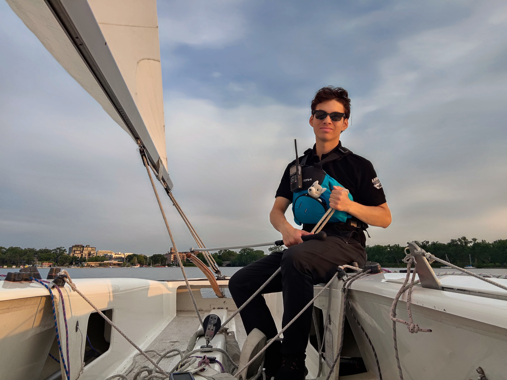

Building real leadership skills.
Teaching and managing logistics.

In 2017, I joined the Minneapolis Sailing Center as a sailing student. In 2022, I became
a sailing instructor at MSC, teaching kids how to sail.
Since then, I've expanded my teaching to students of all ages and skills levels, from
youth beginners to adult advanced racers, private or group lessons, in all types of
boats.
Since 2023, I have been the lead coach for the Optimist Racing Team, teaching kids
how to race sailboats and compete in official regattas.
LinkedIn post!

Optimist Racing Team

I am the lead coach the Optimist boat class racing team for the Minneapolis Sailing
Center. The race team consists of ~12 kids aged 9-12 who have previous sailing
experience. The goal of this youth day camp is to teach the in-depth aspects of
racing sailboats, teach responsibility and leadership, and compete in regional
regattas against other teams. Since 2023, I have been the head coach for the racing
team, leading youth camps, managing team and equipment logistics, and coaching
regattas!

Coaching
I managed logistics and coached a team of ~12 students. I gained real-world
leadership and communication experience, and I was solely responsible for designing
all lesson plans and tailoring my coaching for each student, accounting for unique
sailing and learning styles.

Regattas
I coach the Optimist Race Team and 420 Race Team at regattas across Minnesota.
There are many different venues such as Lake Minnetonka & White Bear Lake, and lots
of different formats, such as fleet, adventure, and long-format races.
Laser Racing

I teach the Laser Racing classes to adults who have some previous sailing
experience. The class aims to give adults a taste in racing sailboats, by using our
trickiest boat: the Laser. In just 2 weeks, the class teaches intermediate level
sailors the in-depth strategies & tactics of sailboat racing, complex boat control,
and the physics of sailing.

Coaching
I taught complex physics and aeronautical concepts, such as wing-tip vortices,
airflow separation, and centre of gravity & roll center dynamics.

Technical Knowledge
I use pratical classroom and on-the-water demonstrations, as well as string-and-tape
demos to help teach the concepts of airflow.
Sailboat & Motorboat Maintenance

I perform maintenance on motorboats & sailboats, including my day-to-day maintenance responsibilities as the Optimist Racing Coach, fixing wear and tear on practice equipment, and ensuring regatta equipment is up to class standards. In addition, I perform maintenance on our fleet of membership sailboats, including sails and rigging.


Maintenance Work
Dockmaster & Private Lessons


Dockmaster
While on duty, I oversee the operations of the membership program, schedule events,
manage water safety, and act as the front desk attendant for the Minneapolis Sailing
Center.

Private Lesson Instructor
I taught Laser, Ensign, C-Scow, and C240 sailing private lessons. These lessons are
tailor-made for each student and boat class, and are wildly variable, from first
time joyrides to in-depth racing lessons for experienced sailors.